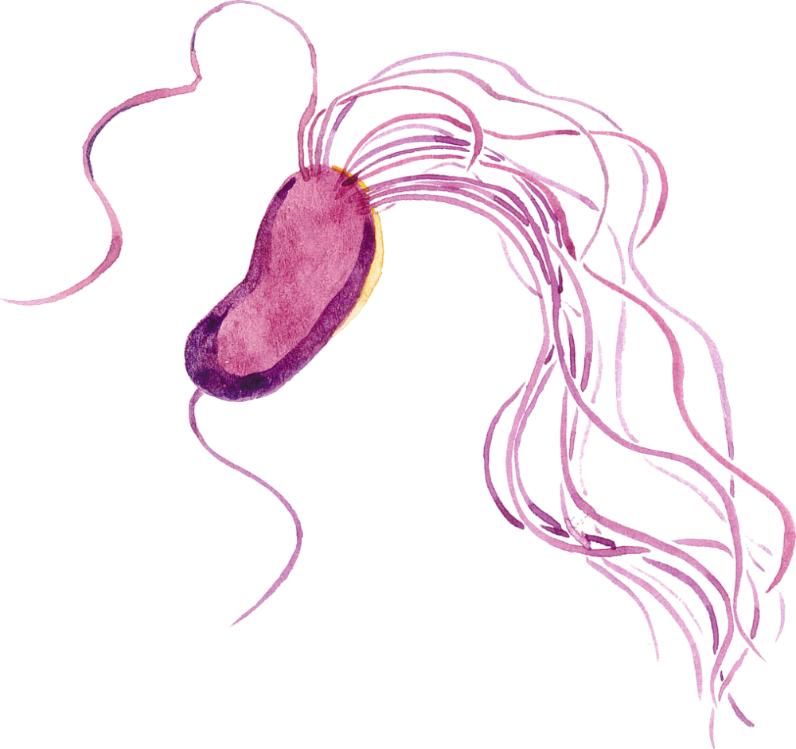
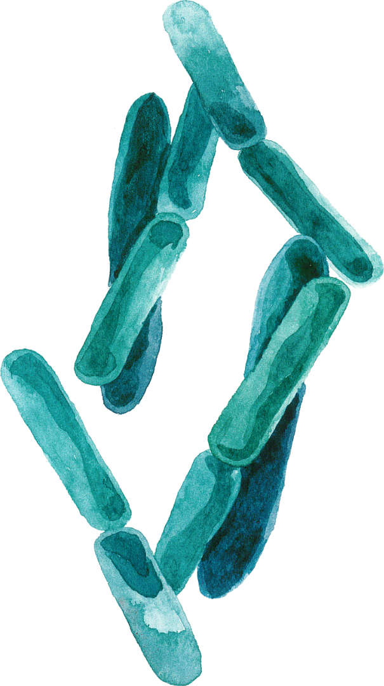
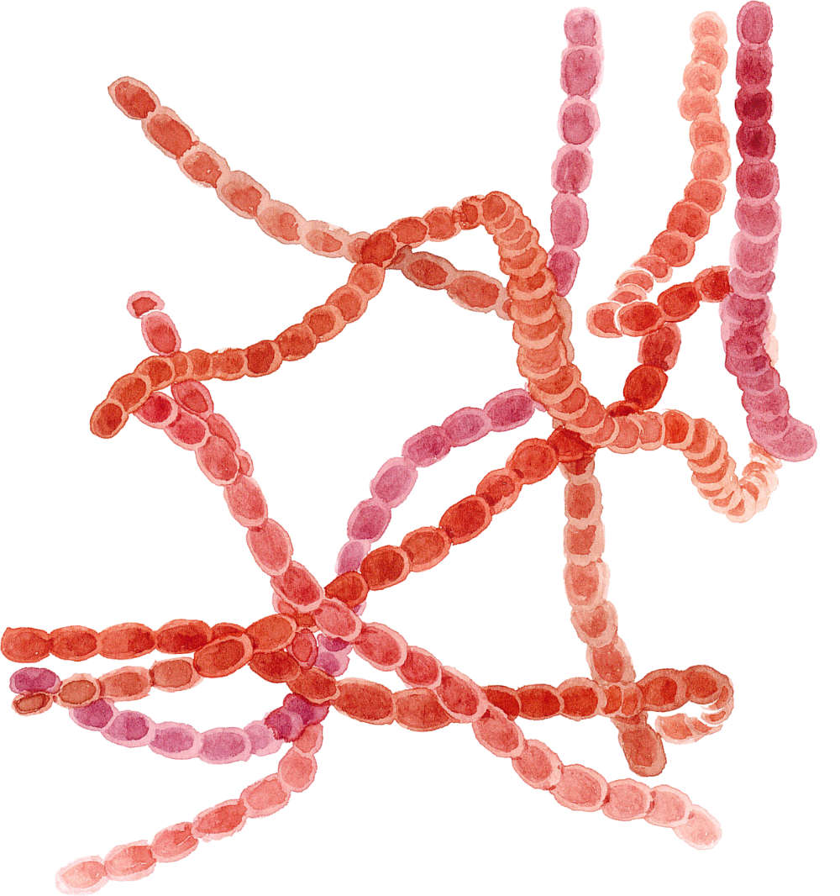

a seca
cinnamomi — for the cinnamon (Cinnamomum) on which R. D. Rands first described it, Sumatra, 1922.


It grows between about 9 °C and 30 °C, fastest near 27 °C — so the cycle races through a mild, wet Mediterranean spring. No film of water in the soil, no swimming zoospores. The disease is confined to the moist. It is heterothallic: sex needs two mating types. Where only one is present, as across much of Iberia, it persists and spreads clonally — by chlamydospores and swimming zoospores.


Films of water let sporangia form and zoospores swim; inoculum builds in the soil.
With its fine roots destroyed, a drought-stressed oak can no longer draw water. It dies where it stands.

Pseudomonas
- DAPG & phenazines — antifungal antibiotics
- Siderophores lock up iron, starving the pathogen
- Volatiles — 2-undecanone, HCN, ammonia
One strain deformed the pathogen's mycelium and ruptured its membranes.

Bacillus
- Lipopeptides — iturin, surfactin, fengycin
- Punch holes in the oomycete's membranes
- Spore-formers outlast drought beside it
By volatiles alone, one strain cut the pathogen's growth by 76%.

Streptomyces
- Antifungal secondary metabolites
- Cell-wall enzymes — chitinases, glucanases
- Filamentous actinobacteria of healthy soil
The classic antibiotic-makers — much of medicine's soil pharmacy began here.